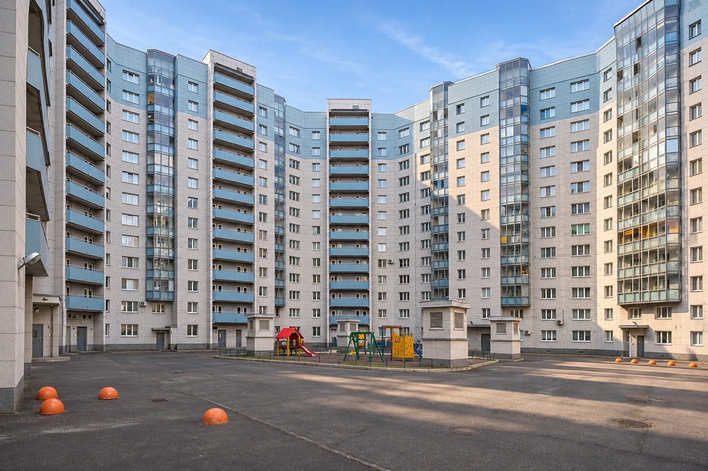

<!-- HTML-ФРАГМЕНТ: 06-lot-building.html; не полная страница. -->
<section class="section " id="lot-building" aria-labelledby="lot-building-title"><div class="container"><div class="section-heading"><div><p class="eyebrow">АДРЕС И ХАРАКТЕР</p><h2 id="lot-building-title">О доме</h2></div></div><div class="project-description"><div class="project-description__text"><h3>Дом на Шуваловском проспекте, 90 к 1</h3><div class="passport passport--text-only"><dl class="passport-facts"><div><dt><span>Год постройки</span></dt><dd>2009</dd></div><div><dt><span>Этажность</span></dt><dd>13 этажей</dd></div><div><dt><span>Класс дома</span></dt><dd>Комфорт</dd></div><div><dt><span>Паркинг</span></dt><dd>Подземный</dd></div><div><dt><span>Двор</span></dt><dd>Детская и спортивная площадки</dd></div></dl></div></div><figure class="project-description__image"></figure></div></div></section>
